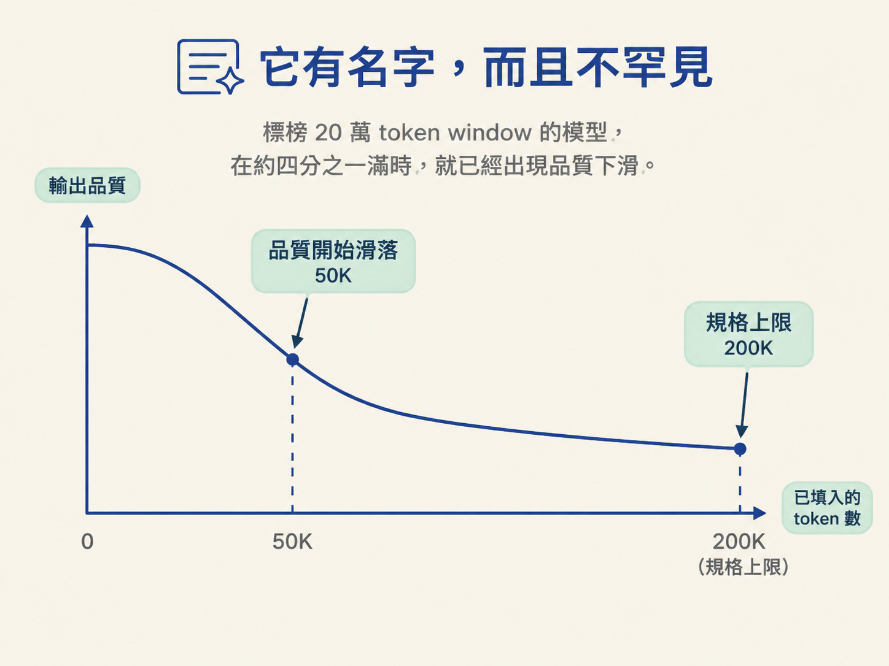
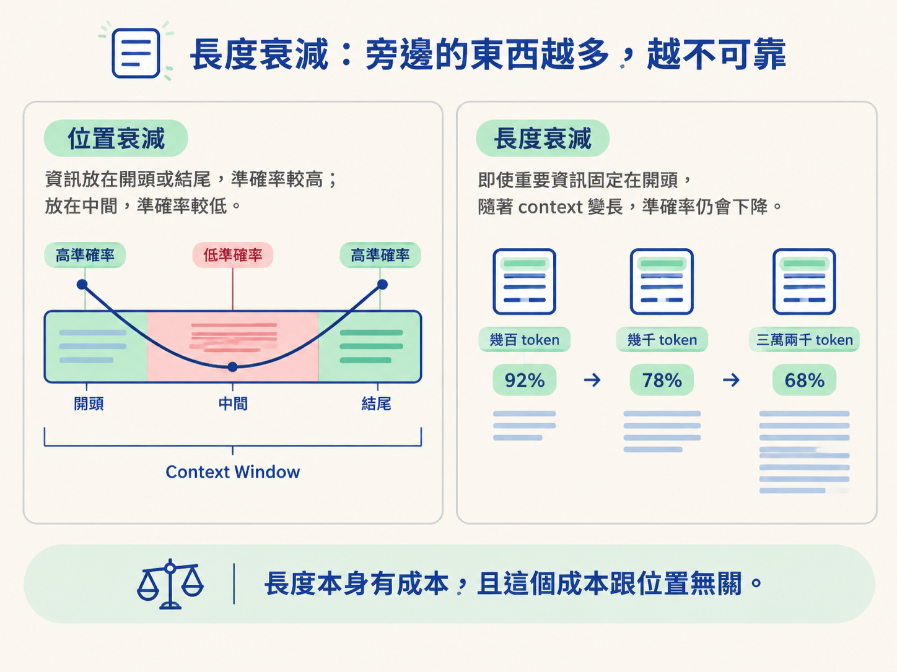

能說明 context rot 為什麼在 window 裝滿之前就開始，並分辨位置衰減（U 形）與長度衰減這兩種不同的機制。
上一節的結論是：context window 會滿，主因是探索的成本，不是你的專案太大。知道它總有一天會滿之後，下一個問題就很自然了：那滿了之後會怎樣？
多數人的直覺是：在裝滿之前都好好的，爆掉才會出事。這一節要拆掉的，就是這個直覺。
你有沒有遇過這種情況：session 一開始你就把某個決定講得很清楚，例如「這個欄位不接受 null，一律用空字串」。跑了二十來輪之後，它卻像從來沒聽過這件事，又把 null 用回來了。你翻回去找，那段話明明還留在對話裡，一個字都沒少。它沒有消失，卻像被模型吃掉了。
這種「明明在，卻用不到」的現象不是你的錯覺，也不是模型在偷懶。它有名字，而且是被反覆量測過、跨模型一致的行為。
這個現象叫 context rot（上下文腐化）：隨著越來越多 token 進入 context window，輸出的品質會一路往下掉，而且在 window 填滿之前就開始。
2025 年有研究系統性地測試前沿模型在拉長 context 之後表現如何。結果橫跨十八個不同的模型，每一個都呈現同一個模式：塞進去的 token 越多，輸出品質越低。不是某些模型，不是大部分模型，是全部。
更讓人意外的是它開始發作的時間點。一個標榜二十萬 token window 的模型，才走到五萬 token，也就是四分之一滿，就已經呈現出真實、可量測的品質下滑。

這裡要記住一句話：盒子上寫的那個數字是技術天花板，不是品質開始滑落的位置。規格寫的是「最多能裝多少」，不是「裝到多少之前都能維持同樣的判斷力」。這兩件事經常被混為一談，就像把卡車的載重上限當成「這個重量以下貨物都不會受損」一樣。
研究進一步把這個下滑拆成兩種效應。它們值得分開來看，因為對應的習慣不太一樣。
第一種叫位置衰減（positional degradation）：資訊在 window 裡的位置，會影響它被用得好不好。多份研究都發現一個一致的 U 形：落在對話最開頭或最末尾的資訊，模型用得比較好；被埋在中間的資訊，用得明顯差，在受控測試裡有時差到二、三十分。
這就解釋了前面那個場景。你二十輪前講過的決定，為什麼感覺像「不見了」，即使它技術上還在 window 裡。它沒有不見，它只是坐在模型最不擅長取用的那個位置上，就像一本厚書夾在正中間的書籤，翻起來最費力。
第二種叫長度衰減（length degradation），它跟位置無關。就算你把重要資訊放在最有利的位置（開頭、容易找到），只要周圍的 context 越長，準確率還是會掉。
一份受控研究發現，當輸入從幾百 token 成長到幾千 token，任務本身完全沒變，推理準確率從 92% 掉到 68%。另一份研究更進一步：當一個事實是被改寫而不是逐字重複時，多數受測模型在背著大約三萬兩千 token 的時候，準確率會掉到它短 context 時的一半以下。
| 機制 | 它關乎什麼 | 可觀察的現象 |
|---|---|---|
| 位置衰減 | 資訊放在 window 的哪個位置 | U 形：開頭結尾好、中間差，可差 20–30 分 |
| 長度衰減 | 周圍 context 有多長 | 位置擺得再好，輸入越長準確率越低（92%→68%） |
把這兩件事合起來，結論就清楚了：不只是「不要把東西埋在中間」，也是「不要以為空間越大就越可靠」。長度本身有成本，而且這個成本跟位置無關。空出來的空間不會讓模型變聰明，只會讓它有更多東西要顧。

context rot 指的是：越多 token 進入 window，輸出品質越低，而且它在 window 填滿之前就開始：二十萬 token 的 window 在五萬 token 就能量測到下滑。它分成兩種機制：位置衰減（U 形，中間最差，可差 20–30 分）與長度衰減（不管位置，周圍越長越不可靠，推理準確率 92%→68%）。規格上的上限不等於品質的保證。
到這裡你看到的，是「量」與「位置」怎麼在你滿之前就悄悄侵蝕可靠度。但長度並不是唯一讓一個 session 變差的東西。還有第二個問題，它更安靜、更容易被忽略，而且跟 window 有多滿完全無關，它只跟 window 裡裝了什麼樣的東西有關。這就是下一節的主題：切換主題。